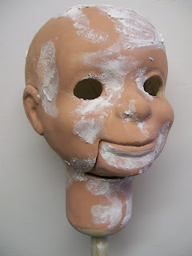

Retro-Figures
3/4/2011
{kind=link}

During the 1940s and into the 1950s, Fred and Madeleine Maher sold ventriloquist figures converted from the commercial ventriloquist dolls of that time period. Such as the very cute dolls by Regal Doll Company. Some of you will remember the names of Russell and Dale, for example.
When I purchased Maher Studios in 1969 I began, with limited success, to recreate some of those same characters. But I had to give up their construction (or chose to do so) when my backlog of orders had extended delivery times to 12 months or more.
Today, after 40 years figure making experience and with modern material to work with, I know I can do better. So maybe to satisfy my own urges as much as the desire to produce a more accurate likeness of those early figures to market, I've set about to produce a limited series of 36" "Retro-figures". You see one such head here with final imperfections being dealt with.
My goal is to have a finished product ready to introduce by the end of the month. It will be introduced first right here on this blog.